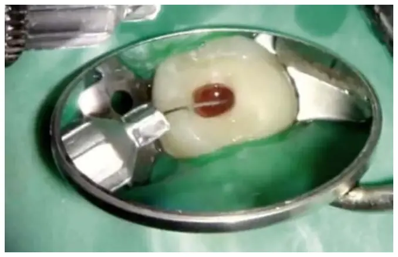

نسخه استخراجشده؛ ترجمه یا تأیید علمی انجام نشده است. وضعیت: captured
درمان ریشهی مولر دوم پایین است. IANB، اینفیلتراسیون باکال آرتیکائین و اینترااوسئوس انجام شده و سقف اتاقک پالپ باز است، ولی بیمار با نخستین فایل از درد به خود میپیچد. چه کار میکنی؟

در حدود ۵ تا ۱۰٪ دندانهای خلفی پایین با پالپیت برگشتناپذیر علامتدار، حتی تزریقهای تکمیلی تکرارشده هم بیحسی عمیق نمیدهند. اینجا تزریق اینتراپالپال به کار میآید: محلول مستقیم در اتاقک پالپ یا کانال.
اینتراپالپال از دو راه بیحسی میدهد: اثر دارویی بیحسیکننده و فشار محلول در فضای بسته. فقط وقتی ممکن است که اتاقک پالپ با فرز یا پوسیدگی باز شده باشد.
با رواج اینترااوسئوس، نیاز به اینتراپالپال کمتر شده است.
اگر سوزن محکم نمینشیند و محلول به ساکشن برمیگردد، فقط اثر دارویی داری و اثر فشار از دست رفته است؛ سوزن را عمیقتر در اتاقک یا کانال ببر و دوباره ۰٫۲ تا ۰٫۳ میلیلیتر بده. دهانهی کوچک بهتر جواب میدهد؛ پوسیدگی وسیع کار را سختتر میکند.
اشتباه رایج: تزریق بیخبر. پیش از تزریق بگو یک لحظه درد شدید دارد که تقریباً در یک ثانیه از بین میرود. آرامبخشی با نیتروس اکساید تحمل را آسانتر میکند. اگر حتی باز کردن اتاقک دردناک است، با آنگل سرعت پایین کار کن، پنبهی آغشته به بیحسی را روی کف پالپ بگذار، ۳۰ ثانیه بعد آن را فشار بده؛ ظرف ۲ تا ۳ دقیقه ناحیه بیحس میشود.